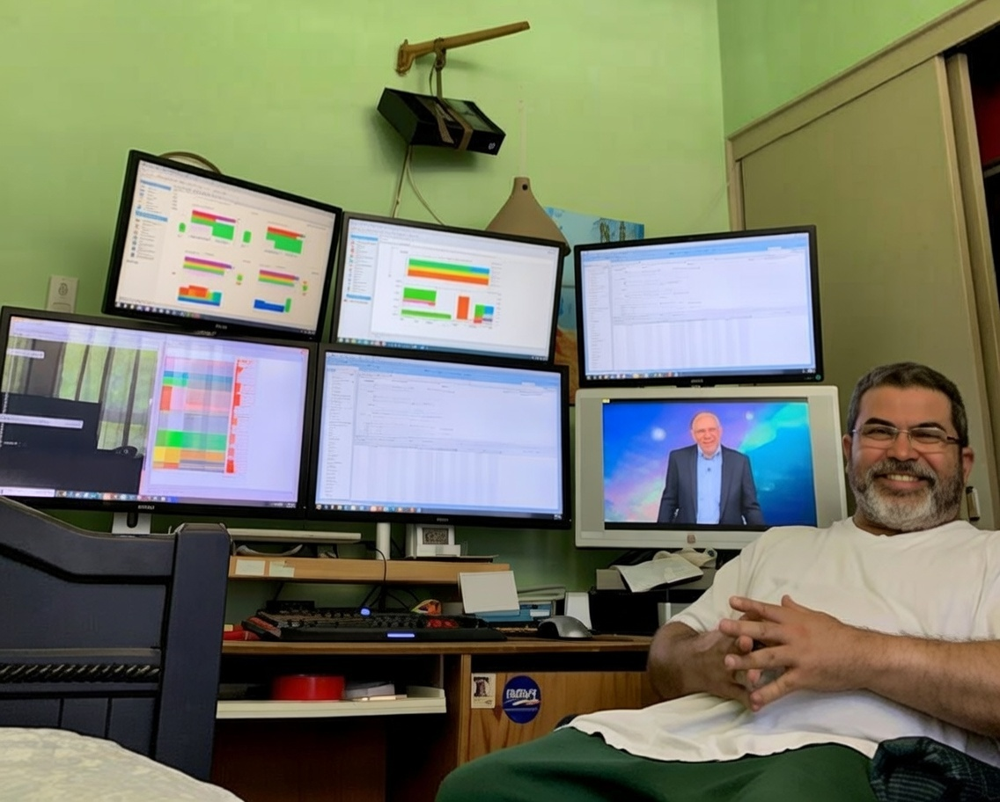

About Me

I am a dedicated data specialist and graduate student working at the intersection of subsurface data analysis and modern data visualization. Based in Bakersfield, California, I leverage my technical expertise to design and build comprehensive Spotfire reports that transform complex operational data into actionable insights for oil and gas operations.
Professional
Position: Subsurface Data Specialist
Location: Bakersfield, California
Focus: Building and maintaining Spotfire analytical reports for operational reporting
Education
Bachelor's Degree: Interdisciplinary Studies
- Technical Writing
- Data Analytics (with undergraduate certificate)
- Psychology Research
Associate Degrees: 14+ completed across multiple disciplines including Geology, Information Technology, Mathematics, English Literature, Economics, History, and other topics of interest
Current Graduate Studies: University of Arkansas at Little Rock (UALR)
- Data Science Certificate (final course in progress)
- Master's Program: Class 71003 (Spring 2026 - first course)
Lifelong Learner: Committed to continuous education and exploration across diverse fields of knowledge